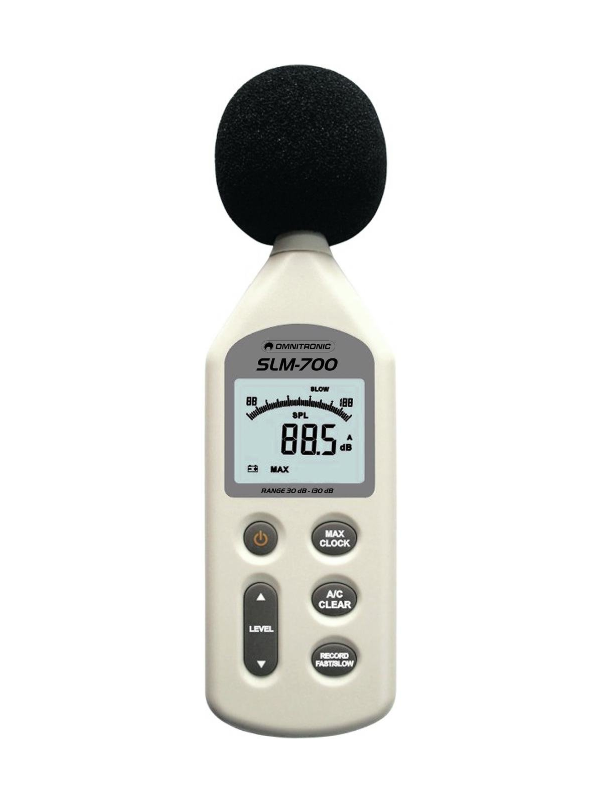
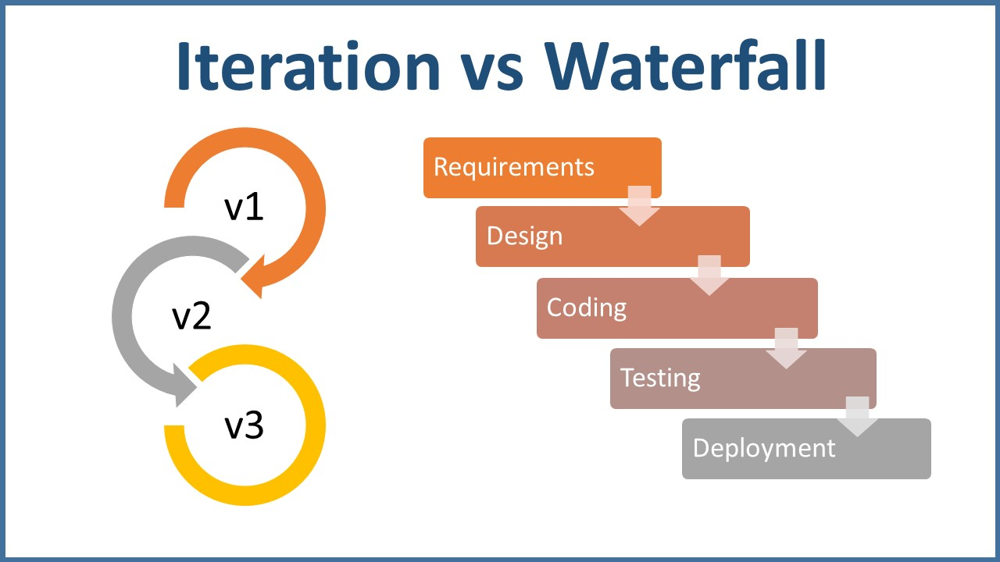
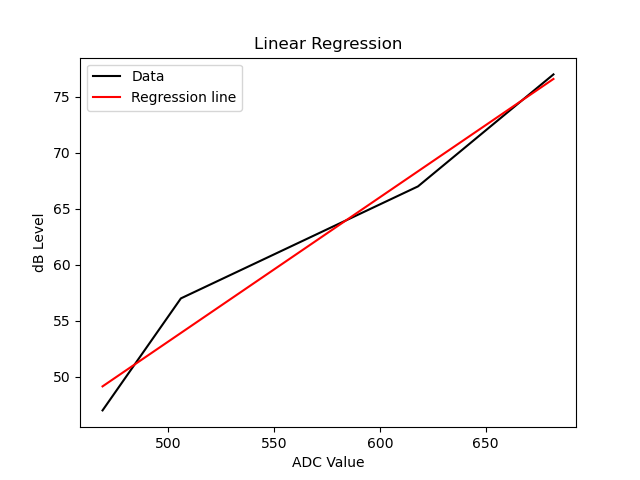
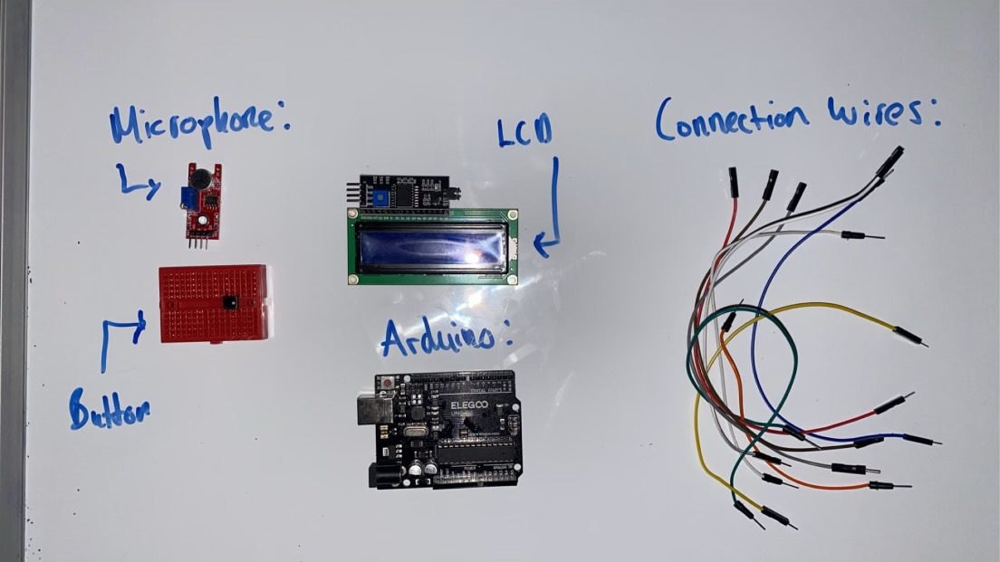
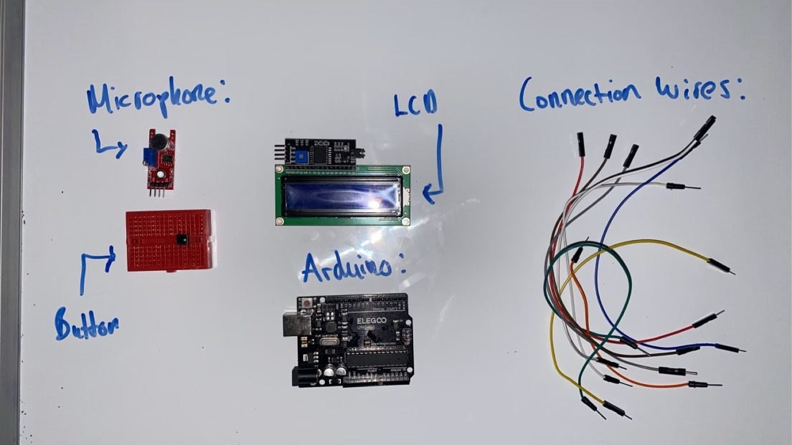
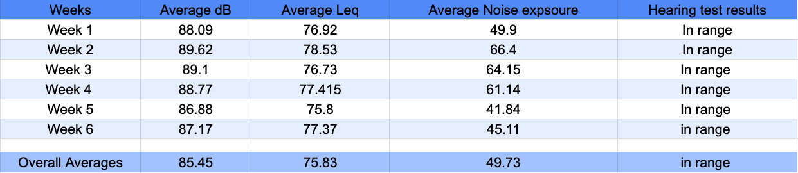
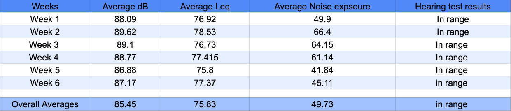

Meeting the Brief
placeholder
Investigation and Plan
My understanding of this years brief is I need to address an aspect of health or wellbeing while having an embedded system that can take in continous or discrete data and have a model that can make sometype of predictions based on information ascertained and a key component of that is it must be able to answer a 'what if question'. The key citrea I must include within my Project are as follows;
- Automated system
- Fully functional circuit that can calculate dB-A and LAeq
- Sleekly designed GUI with insightful graphs with a good UX using HTML, CSS and JS
- To learn more about the area of Otolaryngology to see if I enjoy computational Biology
- Using statistics and probability to make predictions on sound exposure with my model
- Data validation and storage
- Analysis component
- Computer model
- Can answer a what if question
- Can have a graphical display
Following this I completed a mind map of some ideas and then compared them against each other under the citrea:
.jpg)
| Idea/Feature | Automated System | Data Validation & Storage | Analysis Component | Computer Model | "What If" Question | Graphical Display | Total |
|---|---|---|---|---|---|---|---|
| Habit Tracker System | 3 | 3 | 2 | 2 | 2 | 3 | 15 |
| Study Focus Monitor | 3 | 3 | 4 | 3 | 3 | 3 | 19 |
| Mood Tracker | 4 | 3 | 4 | 2 | 3 | 4 | 20 |
| Calorie Tracker | 4 | 5 | 5 | 4 | 4 | 5 | 27 |
| Decibel Level Detector | 5 | 3 | 3 | 3 | 3 | 3 | 20 |
| Decibel Level Exposure Calculation | 4 | 4 | 5 | 5 | 5 | 4 | 27 |
| Stress Management | 3 | 2 | 4 | 3 | 3 | 3 | 18 |
| Tracking Sleep Habits | 3 | 4 | 3 | 3 | 2 | 4 | 19 |
| Fitness Improvement Tracker | 5 | 4 | 5 | 4 | 4 | 5 | 27 |
| IoT Pantry | 2 | 3 | 2 | 2 | 2 | 3 | 14 |
| Step Counter to Track Calories Burned | 4 | 4 | 3 | 3 | 3 | 4 | 21 |
I then conducted a survey amongst my peers with the ideas from the mindmap

From these tests the area I decided to combine the areas of the hearing element into one system (decibel levels on the human ear). Noise pollution is a major issue in todays society. According to the NCBI around 6.1% of the world population develops permentant hearing loss due to preventable Noise exposure lol
I researched existing systems that take in decibels and large data sets relating to the topic. This led me to study and investigate the area of olarynotogology which is the study of the throat and ear. From this I ascertined that In order to use certain data sets I would need to calculate Laeq which can be done from a series dB-A values (A-weighted Decibel levels which attempt to account for the varying sensitivity of the Human Ear). I am also calculating the noise exposure percentage based on the NIOSH reference. I would also need to monitor my ear health with hearing tests in the G.U.I
NIOSH reference
Leq standard
The reasoning for using Laeq (A-weighted Equivalent Continous Sound Pressure Level).This is the standard measurement for Data sets relating to the effects of noise on the ear. I also need to perform a hearing test within the G.U.I as a reference for my hearing health
Heres what a professional version would look like
To calculate these measurements I would have to construct an Sound Pressure Level (SPL) meter. This device takes in sound pressure readings then converts them to dB using a series of calculations carried out by a 8-bit micro-controller A typical SPL meter Add reference 
The user interface should have a universal design. I want it to look nice and sleek while also being accesible, intutive and easy to use. One ethical concern I have about the Model is the data it is gathering. Some people may not want their personal data being tracked so for that reason the model will store no user data externally instead only temporarily storing it on the users device.
Some personal goals I have for this project are:
Design

Plan
The artefacts in this project were designed using the iterative design procress I went with a mixture of the agile and waterfull procress. This was chosen as I felt it was the best approach to effectively create and implement features without wasting time as parts of the Project could be developed independently whereas others require other elements. From this I decided to create a gantt chart to layout the project in this formattChoosing the Embedded System
The following options for embedded systems are:
- Microbit: Simple, yet lacks advanced features.
- Arduino: Complex language, highly compatible.
- Raspberry Pi: Expensive, powerful, uses Python.
I decided to go with an arduino as its the system I have the most experience and expertise with. This would make developping the system as a whole alot easier
Needed components
- Microphone
- Allows me to record the ADC value
- LCD
- Allows me to display the dB value
- Button
- Allows me to start and end the test
Meeting brief requirements
1..Design
understanding the requirements of my system i will lay out the basic system design with flowchartsInitial Decomposition

Embedded system flowchart

Embedded system analysis flowchart:
G.U.I / Model

Create
Weekly log
Fill Later
Embedded System
I ordered the following components:Microphone Testing
In my research I learned that the value the Microphone outputed was a continous ADC value. I orginally attempted to calibrate the mic by playing certain dB values and then recording the ADC assuming this would map linearly i.e ADC value would map perfectly to a dB and from that I could perform a conversion.
ADC at dB data CSV
 But I quickly found out that dB and ADC values do not map linearly so instead I would have to find
another method to do the conversion
But I quickly found out that dB and ADC values do not map linearly so instead I would have to find
another method to do the conversion

I first attempted to use this equation:
But due to the mircophone not being super percise this method did not work.
Linear regression
I researched other methods online and found out that my best bet was to use linear regression as it would produce a line that would be able to map the ADC and dB.From this line i could extract a Y value for any X value using the intercept and slope with this equation.

so my dB conversion equation became:

and this worked perfectly so now my dB and ADC values perfectly matched accurately
Regression line
Circuit
After this Unit test I then fully constructed the circuit and made this circuit diagram for documentation 

Following it was time to create the full system. I started with the embedded system as that was a Key feature of project and the rest of it relied on it. This code can be visualised here:

Python/Javascript Model:
As Arduino uses C++ I decided to use a seperate python script for data analysis. This is the visualisation of the script:

Data Validation
I needed a method of storing the data. Since for my [G.U.I] I was going to be using Java script I decided the best formatt for storing data was a JSON file (Java Script Object Notation). This file formatt allows for more intutive and eloquent method of calling data. I think the syntax is better and a better alternative to a CSV fileJson Formatt:

I now needed a way to monitor the serial port, record the date, time, perform exposure calculation and calculate leq. I found packages online that could monitor the serial port and record date and time but the other functions were too specific so I had to create them myself. Which involved me taking their equation and converting it to a script.
Packages:
 Add documentation
Add documentation
Custom Functions
Exposure Calc
The first function I had to create was the exposure calculation based off this relationship table.
 NIOSH exposure Rel
NIOSH exposure Rel
I could find not standard mathematical notation for this equation so I wrote one and completed the function
Equation and function


Leq Calc
The Leq calculation was very easy to do. I found a seperate approximation equation that would work perfectly for this project and then watched a youtube vid explaining it. This Made it very easy to convert into a python script.
Equation and function:


Explanation
Personal data
With the core functionality in place I was able to record my own personal data. Whenever I came home from school I would turn on my system and the script would activate recording the data for two hours then saving the data to the universal JSON.I started on the 2024-02-09 and finished recording data on the 2024-03-11 This was a sufficient time period to perform data analysis
Average Values table:
| Weeks | Average dB | Average Leq | Average Noise exposure | Hearing test results |
|---|---|---|---|---|
| Week 1 | 88.09 | 76.92 | 49.9 | In range |
| Week 2 | 89.62 | 78.53 | 66.4 | In range |
| Week 3 | 89.1 | 76.73 | 64.15 | In range |
| Week 4 | 88.77 | 77.415 | 61.14 | In range |
| Week 5 | 86.88 | 75.8 | 41.84 | In range |
| Week 6 | 87.17 | 77.37 | 45.11 | In range |
| Overall Averages | 85.45 | 75.83 | 49.73 | In range |
From this table i was able to graph my average exposures over the 5 week period. (in range for hearing test means I was in my age range).
Average Values chart:

G.U.I
since I had made the funxctions in python and JS is my strongest language the conversion was very easy. One of the requirements I set for my self was Universal UI. With that in that in mind I designed this Sleek User interface.

Additionally I implemented a progress ring and an api to play different tones so I could show the daily noise exposure percent and perform the hearing test.


Testing
Now that all the secondary components were in place it was time to begin testing the system as a whole. From my study of computer science i learned various testing methods and now I had a chance to employ them. I had already employed a Unit Test on my microphone and now it was time to do the same for individual components of my project and then finally ending the testing with a System test I performed a unit test on each overall component and displayed that here
| Function | Input | Output | Expected Output | Pass/Fail |
|---|---|---|---|---|
| Embedded system | Button and ADC value | dB on LCD | dB on LCD | Pass |
| Embedded system analysis | dB | JSON in correct format with accurate info | JSON in correct format with accurate info | Pass |
| G.U.I | Average Leq, Average dB, Average exposure %, Gender, Age, Occupation | Predictions and Progress Ring Chart (Progress Ring doesn't work) | Predictions and Working Progress Ring Chart | Fail (Progress Ring) |
the progress ring failed the system test. So i decided to separate it and perform a unit test:
Progress ring error:

I used a try function to see if the issue was the bar initialization.
 
I have found my issue now its time to find a solution. I copied the error message online and
found out that i need to wait for the page to load and that can be achieved with this line
' document.addEventListener('DOMContentLoaded', function()' which waits for the content to load.

I have found my issue now its time to find a solution. I copied the error message online and
found out that i need to wait for the page to load and that can be achieved with this line
' document.addEventListener('DOMContentLoaded', function()' which waits for the content to load.
Evaluation
placeholder
References
placeholder